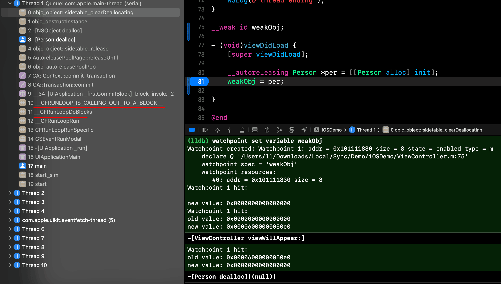
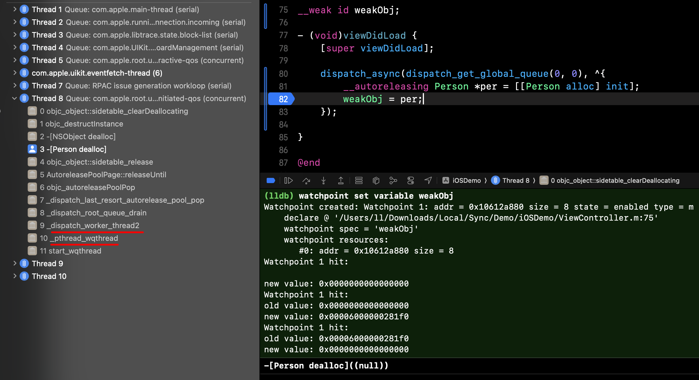
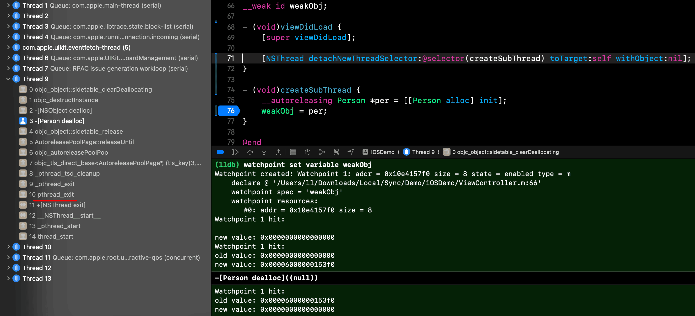
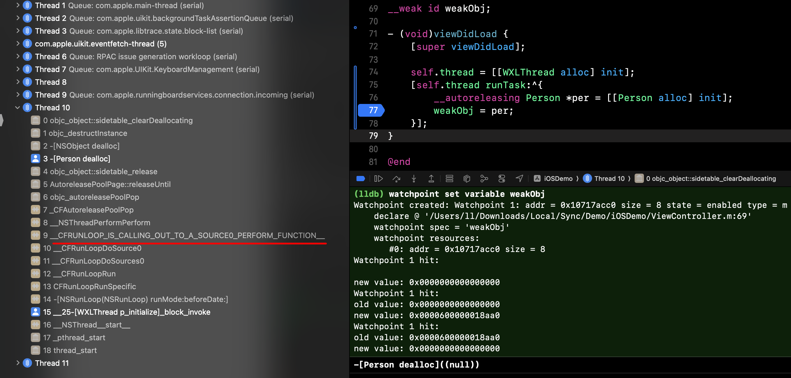

由 布多(budo) 发布于 2025-03-30
揭开 AutoreleasePool 的面纱
AutoreleasePool（中文也叫自动释放池）是 iOS 内存管理机制中的一个重要组成部分。它优雅地解决了对象生命周期管理的问题 - 通过延迟对象的释放时机，在合适的时间点统一回收内存资源。
这个精妙的设计背后有着怎样的实现原理呢？让我们一起深入 objc4 开源项目的源码，去探索 AutoreleasePool 的底层实现细节。
📝 本文使用的 Runtime 版本是 objc4-906。为了方便阅读，我对代码样式和排版略作了修改，并删减了一些不影响主逻辑的冗余代码。
🔧 我在 这里 维护了一个可以直接运行调试的 Runtime 项目，欢迎大家下载调试源码。
深入底层：AutoreleasePool 的实现机制
在 ARC 环境下，我们作为开发者能够接触到 AutoreleasePool 的场景主要有两种：
使用
__autoreleasing修饰符- 将对象注册到自动释放池中
- 实现对象的延迟释放机制
使用
@autoreleasepool {}语法块- 精确控制内存的释放时机
- 有效控制内存峰值
让我们一起深入源码和汇编层面，揭开这两种使用场景背后的技术实现细节。
__autoreleasing 修饰符的内部实现

从断点的汇编代码中我们可以发现，当我们使用 __autoreleasing 修饰一个对象时，系统会自动将其转换为对 objc_autorelease 函数的调用。这个操作等同于在 MRC 环境下手动调用对象的 autorelease 方法，它们在底层实现上是完全一致的。
让我们深入 Runtime 源码，一探 objc_autorelease 的内部实现。以下是经过整理的核心代码（如果觉得代码太长可以先跳过，后面会有详细解释）：
id objc_autorelease(id obj) { |
上面的函数调用流程大致如下：
objc_autorelease |
从上面的代码分析中我们可以看到，当一个对象被标记为 autoreleasing 时，系统会通过一系列函数调用最终将其加入到 AutoreleasePoolPage 中。这个过程主要由 autoreleaseFast 函数完成，它负责管理对象的具体存储工作。在 autoreleaseFast 函数内部，系统会获取当前线程的 hotPage（所谓的 hotPage，其实就是双向链表的尾节点），然后根据 page 状态决定执行逻辑：
| 场景 | 状态 | 执行逻辑 |
|---|---|---|
| 逻辑一 | page 存在且未满 | 直接调用 add 函数将对象添加到 Page 中 |
| 逻辑二 | page 存在但已满 | 调用 autoreleaseFullPage 创建新 Page，然后添加对象 |
| 逻辑三 | page 不存在 | 直接创建新 Page，然后添加对象 |
这里有一个有趣的优化细节：系统并不是直接存放对象的地址，而是将其包装成一个 AutoreleasePoolEntry 对象。这样设计的原因在于系统采用了 “对象合并优化” 方案 - 当多个相同对象被重复加入 Page 时，系统只会保留第一个对象，并通过 count 值记录该对象被重复加入的次数。这种优化可以有效减少内存占用（具体细节请阅读上面的 add 函数）。
至此，autoreleasing 对象就完成了它进入 AutoreleasePool 的全过程。
在上述实现中，有一个核心类型值得我们特别关注 - AutoreleasePoolPage。作为存储数据的底层结构，它在整个自动释放池机制中扮演着至关重要的角色。接下来，让我们深入分析这个关键组件。
AutoreleasePoolPage：内存管理的基石
让我们一起来看看 AutoreleasePoolPage 这个核心类的内部结构。为了便于理解，我对源码进行了精简和注释，保留了最关键的部分：
class AutoreleasePoolPage { |
为了更直观地理解 AutoreleasePoolPage 的内存结构，我绘制了一张简图：

结合 AutoreleasePoolPage 的内部结构和前面分析的函数执行流程，我们可以更清晰地理解 AutoreleasePool 的底层实现。它本质上是一个普通的双向链表结构，其中每个节点都是一个 AutoreleasePoolPage 对象。这些对象通过 parent 和 child 指针相互连接，形成了一个完整的内存管理链条。每个 Page 不仅承担着节点的角色，还肩负着数据存储的重任，是整个自动释放池机制的核心载体。
在内存管理的层面上，AutoreleasePoolPage 的设计也体现了深思熟虑。通过查看其 new 方法的实现，我们可以看到每个 Page 的大小被设定为 4096 字节。这个看似随意的数字其实暗含玄机 - 它与现代操作系统的内存页大小完美对齐。这种设计带来了多重优势：
- 减少内存碎片，提高内存利用效率；
- 实现更高效的内存分配；
- 确保内存访问的连续性，降低系统中断频率；
- 优化缓存命中率，提升整体性能。
这些细节的优化，让 AutoreleasePool 在实现优雅的同时，也保持了极高的运行效率。
@autoreleasepool 的优雅之道
@autoreleasepool {} 是我们在项目中经常使用的另一个重要特性。这个看似简单的语法块背后，隐藏着编译器的巧妙转换和 Runtime 的精密配合。让我们揭开它的神秘面纱，一探其实现原理。
// 原代码： |
通过查看下面的汇编代码截图，我们可以清晰地看到编译器确实将 @autoreleasepool 语法块转换成了 objc_autoreleasePoolPush 和 objc_autoreleasePoolPop 的函数调用。这种转换不仅保证了代码的执行效率，还为开发者提供了一种优雅的内存管理方式：

让我们来看看 objc_autoreleasePoolPush 函数的内部实现。为了便于理解，我将相关代码进行了精简和整理：
void * objc_autoreleasePoolPush(void) { |
这段逻辑非常简洁优雅：它通过调用 autoreleaseFast 函数，在当前的 AutoreleasePool 中插入一个边界标记（POOL_BOUNDARY）。这个边界标记就像是一个书签，标记着当前自动释放池的范围起点。
让我们继续探索 objc_autoreleasePoolPop 的实现细节。下面是经过精简的核心代码，我们将分步骤详细解析其工作原理（如果觉得代码太长可以先跳过，稍后我们会详细解释其工作原理）：
void objc_autoreleasePoolPop(void *ctxt) { |
释放的逻辑稍微复杂一些，我们来梳理一下。当我们调用 pop 函数时，系统会按照以下流程进行对象的释放操作：
- 首先，objc_autoreleasePoolPop 函数会被调用，它是整个释放流程的入口。
- 然后，pop 函数会被调用，它负责处理具体的释放逻辑。
- 接着，popPage 函数会被调用，它负责管理 Page 的释放。
- 最后，releaseUntil 函数会被调用，它负责执行实际的对象释放操作。
完整的函数调用流程如下：
objc_autoreleasePoolPop |
在这些函数中，releaseUntil 和 popPage 扮演着尤为关键的角色：
releaseUntil 函数负责对象的具体释放工作。它会按照先进后出（LIFO）的顺序，将 Page 中的对象逐一释放。在这个过程中，它不仅要处理普通对象的释放，还要考虑对象合并优化带来的特殊情况，确保每个对象都能得到正确的释放次数。同时，它还会通过魔数（SCRIBBLE）标记已释放的内存空间，这么做的目的是方便后期进行内存完整性检查。
popPage 函数则专注于 Page 对象本身的管理和释放。它维护着 AutoreleasePool 的整体结构，确保当 Page 中所有的对象都被释放完后，Page 本身能够被正确地释放，从而保持整个池结构的高效运转。
通过上述分析，我们已经深入理解了 AutoreleasePool 的核心工作原理：系统通过精心设计的入池(Push)和出池(Pop)机制，在保证内存管理安全性的同时，也实现了极高的运行效率。这种双向链表结构不仅让对象的生命周期管理变得优雅，还通过诸如对象合并等优化手段提升了运行性能。
在掌握了这些底层实现细节后，我们将进一步探讨 AutoreleasePool 在多线程环境下的行为特征，以及在实际开发中的最佳实践方案。这些知识将帮助我们更好地驾驭这个强大的内存管理工具。
线程与 AutoreleasePool：纠缠的双螺旋
AutoreleasePool 和线程是一一对应的关系，每个线程都拥有自己独立的 AutoreleasePool。从实现上看，它是一个由 AutoreleasePoolPage 对象组成的双向链表结构，线程通过 TLS (Thread Local Storage) 机制持有这个链表的尾节点（也就是 hotPage）。
关于 AutoreleasePool 的释放时机，这是一个经常被开发者讨论的话题。特别是被 __autoreleasing 修饰的对象，它们具体在什么时候被释放？
经过深入研究，我发现不同场景下对象的释放时机是不同的。让我们逐一分析：
场景一：主线程中的 autorelease 对象
- 由 RunLoop 来管理释放时机
- 通常在当前任务执行完成后释放
- 具体时机可以通过下图来理解：

场景二：GCD 创建的子线程中的对象
- 由于 GCD 采用线程池机制，线程可能会被复用
- 释放时机是在线程任务完成、即将被放回线程池时
- 通过下图可以看到具体流程：

值得注意的是，_dispatch_worker_thread2 函数在处理线程任务时遵循这样的逻辑：从队列中获取并执行任务，当队列为空时让线程进入休眠状态。在进入休眠之前，会调用 _dispatch_last_resort_autorelease_pool_pop 来释放自动释放池中的对象。
场景三：通过 NSThread 等方式创建的非复用线程（无 RunLoop）
- 对象会在线程销毁时被释放
- 释放过程如图所示：

场景四：通过 NSThread 等方式创建的非复用线程（有 RunLoop）
- 释放机制类似于主线程
- 在当前任务执行完成后释放
- 具体流程如下：

场景四中使用的 NSThread 是我开发的一个开源库 WXLThread。这个库实现了一个优雅的常驻线程机制，并提供了简洁而强大的任务调度接口，让线程管理变得更加便捷和高效。
需要特别说明的是，这些释放时机并非固定不变。因为 autoreleasing 对象的释放本质上是由 pop 函数的调用时机决定的。随着系统版本的更新和优化，这些调用时序可能会发生变化。比如在早期版本中，系统是通过在 RunLoop 中注册 Observer 来处理释放操作的，释放时机是在线程即将进入休眠状态之前。
另外，如果对象被 @autoreleasepool {} 语法块包裹，那么它的释放时机就很明确了 - 就是在退出这个语法块作用域的时候。这提供了一种更精确的内存管理方式。
性能优化：TLS 机制解析
- (Person *)createPerson { |
在上面的例子中，如果没有任何优化，系统会在 return 之前对 per 调用 release 方法，这会导致对象过早释放。为了避免这种情况，编译器会在方法返回前将对象加入到自动释放池中，确保调用方能够正常使用这个对象。但这种方案存在一个问题：即使对象马上就会被调用方使用，也要经过「加入自动释放池 -> 从自动释放池取出」这个过程，这无疑会带来一些性能开销。
为了解决这个问题，系统引入了基于 TLS (Thread Local Storage) 的返回值优化机制。具体来说：
- 在返回对象的方法中，编译器会插入
objc_autoreleaseReturnValue调用； - 在接收返回值的地方，编译器会插入
objc_retainAutoreleasedReturnValue调用； - 这两个函数会配合工作：如果检测到它们的调用配对，就会把对象暂存在线程的 TLS 中，直接传递给调用方，完全跳过自动释放池的过程。
这种优化极大地提升了返回对象的性能，尤其是在频繁方法调用的场景下。
通过调试查看汇编代码，我们可以清晰地看到这些优化函数的调用过程，当编译器检测到返回值优化的场景时，会跳过传统的自动释放池流程，直接通过 TLS 机制传递对象提升了性能。让我们通过下面的图来直观地体会这个优化过程：
 |
|---|
| 方法调用方 |
 |
|---|
| 方法返回方 |
常见误区与最佳实践
在实际开发中，我们经常会遇到一些对 AutoreleasePool 使用的误区。其中最常见的就是在循环中过度使用 @autoreleasepool，例如：
for (int i = 0; i < 10; i++) { |
这段代码中的 per 对象是 __strong 类型，它会在每次循环结束时立即释放，无需等待自动释放池的清理。这种情况下添加 @autoreleasepool 并不会带来任何性能优势，反而会因为频繁创建和销毁自动释放池而增加开销。
因此，@autoreleasepool 的使用需要遵循以下原则：
循环中创建了大量 autoreleasing 对象时才使用。这种情况下才能有效降低内存峰值，避免内存持续增长。
调用未知方法时需要谨慎评估。因为方法内部可能会创建 autoreleasing 对象，此时需要使用 @autoreleasepool 包裹，否则也会导致内存峰值过高。
注意：错误的使用 @autoreleasepool 不仅不会带来性能优势，反而会因为频繁创建和销毁自动释放池而产生额外开销。所以在使用前，建议先分析代码中的对象创建情况，再决定是否需要手动管理自动释放池。
技术总结
通过对 AutoreleasePool 底层实现的深入分析，我们可以总结出以下几个关键点：
底层数据结构
- AutoreleasePool 本质是由 AutoreleasePoolPage 对象组成的双向链表；
- 每个 Page 目前的大小为 4KB，按系统内存页对齐以优化性能；
- 每个线程的 TLS 中存储着链表的尾节点（hotPage）；
- Page 中除了存储对象指针外，还包含 magic、next、thread 等重要信息。
对象管理机制
添加对象时，系统首先获取 hotPage，根据其状态执行不同逻辑：
- Page 存在且未满：直接添加对象
- Page 存在但已满：创建新 Page 后添加
- Page 不存在：创建首个 Page 后添加
清理时，系统会从链表末尾往前遍历，逐个释放对象直到遇到指定的边界标记（POOL_BOUNDARY）。
性能优化方案
- 对象合并优化：相同对象重复入池时，通过 count 计数避免重复存储；
- TLS 返回值优化：方法返回对象时，通过 TLS 机制避免自动释放池的中转；
- 内存对齐：Page 大小与系统页对齐，提高内存访问效率；
- 双向链表：支持快速的正向和反向遍历，适应不同的使用场景。
这些精妙的设计不仅保证了 AutoreleasePool 的正确性，还在性能和内存使用效率上都做到了极致的优化。